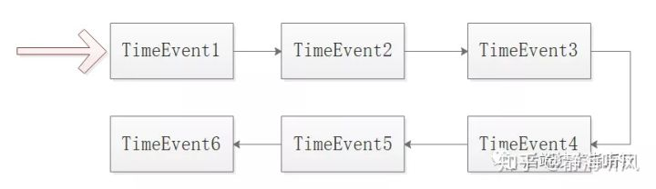
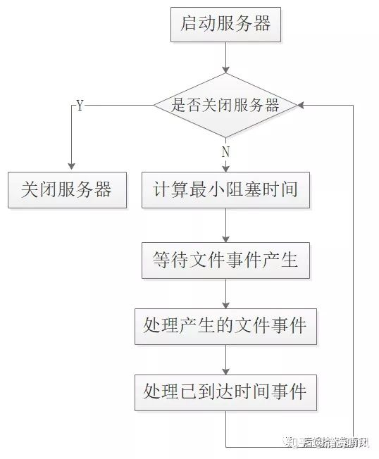

0.概述
本文基于的Redis版本为4.0以下，在Redis更高版本中并不是完全的单线程了，增加了BIO线程，本文主要讲述主工作线程的单线程模式。
通过本文将了解到以下内容：
1.Redis的单线程模式
本质上Redis并不是单纯的单线程服务模型，一些辅助工作比如持久化刷盘、惰性删除等任务是由BIO线程来完成的，这里说的单线程主要是说与客户端交互完成命令请求和回复的工作线程。
至于Antirez大佬当时是怎么想的设计为单线程不得而知，只能从几个角度来分析，来确定单线程模型的选择原因：
多线程模型主要是为了充分利用多核CPU，让线程在IO阻塞时被挂起让出CPU使用权交给其他线程，充分提高CPU的使用率，但是这个场景在Redis并不明显，因为CPU并不是Redis的瓶颈，Redis的所有操作都是基于内存的，处理事件极快，因此使用多线程来切换线程提高CPU利用率的需求并不强烈；
单个Redis实例对单核的利用已经很好了，但是Redis的瓶颈在于内存，设想64核的机器假如内存只有16GB，那么多线程Redis有什么用武之地？
Redis有丰富的数据结构，并不是简单的Key-Value型的NoSQL，这也是Redis备受欢迎的原因，其中常用的Hash、Zset、List等结构在value很大时，CURD的操作会很复杂，
如果采用多线程模式在进行相同key操作时就需要加锁来进行同步，这样就可能造成死锁问题。
这时候你会问：将key做hash分配给相同的线程来处理就可以解决呀，确实是这样的，这样的话就需要在Redis中增加key的hash处理以及多线程负载均衡的处理，
从而Redis的实现就成为多线程模式了，好像确实也没有什么问题，但是Antirez并没有这么做，大神这么做肯定是有原因的，果不其然，我们见到了集群化的Redis；
目前的机器都是多核的，但是内存一般128GB/64GB算是比较普遍了，但是Redis在使用内存60%以上稳定性就不如50%的性能了(至少笔者在使用集群化Redis时超过70%时，集群failover的频率会更高)，
因此在数据较大时，当Redis作为主存，就必须使用多台机器构建集群化的Redis数据库系统，这样以来Redis的单线程模式又被集群化的处理所扩展了；
单线程无论从开发和维护都比多线程要容易非常多，并且也能提高服务的稳定性，无锁化处理让单线程的Redis在开发和维护上都具备相当大的优势；
Redis的设计秉承实用第一和工程化，虽然有很多理论上优秀的设计模式，但是并不一定适用自己，软件设计过程就是权衡的过程。
业内也有许多类Redis的NoSQL，比如360基础架构组开发的Pika系统，基于SSD和Rocks存储引擎，上层封装一层协议转换，来实现Redis所有功能的模拟，感兴趣的可以研究和使用。
2.单线程的文件事件和时间事件
Redis作为单线程服务要处理的工作一点也不少，Redis是事件驱动的服务器，主要的事件类型就是：
其中，时间事件是理解单线程逻辑模型的关键。
Redis的时间事件分为两类：
Redis中大部分是周期事件，周期事件主要是服务器定期对自身运行情况进行检测和调整，从而保证稳定性HA，这项工作主要是ServerCron函数来完成的，周期事件的内容主要包括：
可见 Redis的周期性事件虽然主要处理辅助任务，但是对整个服务的稳定运行，起到至关重要的作用。
Redis的每个时间事件分为三个部分：
时间事件Time_Event结构：
Redis的时间事件是存储在链表中的，并且是按照ID存储的，新事件在头部旧事件在尾部，但是并不是按照即将被执行的顺序存储的。
也就是第一个元素50ms后执行，但是第三个可能30ms后执行，这样的话Redis每次从链表中获取最近要执行的事件时，都需要进行O(N)遍历，
显然性能不是最好的，最好的情况肯定是类似于最小栈MinStack的思路，然而Antirez大佬却选择了无序链表的方式。
选择无序链表也是适合Redis场景的，因为Redis中的时间事件数量并不多，即使进行O(N)遍历性能损失也微乎其微，也就不必每次插入新事件时进行链表重排。
Redis存储时间事件的无序链表如图：

3.单线程下事件的调度和执行
Redis服务中因为包含了时间事件和文件事件，事情也就变得复杂了，服务器要决定何时处理文件事件、何时处理时间事件、并且还要明确知道处理时间的时间长度，因此事件的执行和调度就成为重点。
Redis服务器会轮流处理文件事件和时间事件，这两种事件的处理都是同步、有序、原子地执行的，服务器也不会终止正在执行的事件，也不会对事件进行抢占。
这个调度过程还是比较有意思的，我们来一起看下：
文件事件是随机出现的，如果处理完成一次文件事件后，仍然没有其他文件事件到来，服务器将继续等待，
在文件事件的不断执行中，时间会逐渐向最早的时间事件所设置的到达时间逼近并最终来到到达时间，
这时服务器就可以开始处理到达的时间事件了。由于时间事件在文件事件之后执行，并且事件之间不会出现抢占，
所以时间事件的实际处理时间一般会比设定的时间稍晚一些。
Redis源码ae.c中对事件调度和执行的详细过程在aeProcessEvents中实现的，具体的代码如下：
int aeProcessEvents(aeEventLoop *eventLoop, int flags)
{
int processed = 0, numevents;
if (!(flags & AE_TIME_EVENTS) && !(flags & AE_FILE_EVENTS))
return 0;
if (eventLoop->maxfd != -1 ||
((flags & AE_TIME_EVENTS) && !(flags & AE_DONT_WAIT))) {
int j;
aeTimeEvent *shortest = NULL;
struct timeval tv, *tvp;
if (flags & AE_TIME_EVENTS && !(flags & AE_DONT_WAIT))
shortest = aeSearchNearestTimer(eventLoop);
if (shortest) {
long now_sec, now_ms;
aeGetTime(&now_sec, &now_ms);
tvp = &tv;
long long ms =
(shortest->when_sec - now_sec)*1000 +
shortest->when_ms - now_ms;
if (ms > 0) {
tvp->tv_sec = ms/1000;
tvp->tv_usec = (ms % 1000)*1000;
} else {
tvp->tv_sec = 0;
tvp->tv_usec = 0;
}
} else {
if (flags & AE_DONT_WAIT) {
tv.tv_sec = tv.tv_usec = 0;
tvp = &tv;
} else {
tvp = NULL; /* wait forever */
}
}
numevents = aeApiPoll(eventLoop, tvp);
if (eventLoop->aftersleep != NULL && flags & AE_CALL_AFTER_SLEEP)
eventLoop->aftersleep(eventLoop);
for (j = 0; j < numevents; j++) {
aeFileEvent *fe = &eventLoop->events[eventLoop->fired[j].fd];
int mask = eventLoop->fired[j].mask;
int fd = eventLoop->fired[j].fd;
int fired = 0;
int invert = fe->mask & AE_BARRIER;
if (!invert && fe->mask & mask & AE_READABLE) {
fe->rfileProc(eventLoop,fd,fe->clientData,mask);
fired++;
}
if (fe->mask & mask & AE_WRITABLE) {
if (!fired || fe->wfileProc != fe->rfileProc) {
fe->wfileProc(eventLoop,fd,fe->clientData,mask);
fired++;
}
}
if (invert && fe->mask & mask & AE_READABLE) {
if (!fired || fe->wfileProc != fe->rfileProc) {
fe->rfileProc(eventLoop,fd,fe->clientData,mask);
fired++;
}
}
processed++;
}
}
/* Check time events */
if (flags & AE_TIME_EVENTS)
processed += processTimeEvents(eventLoop);
return processed;
}上面的源码可能读起来并不直观，在《Redis设计与实现》书中给出了伪代码实现：
def aeProcessEvents()
#获取当前最近的待执行的时间事件
time_event = aeGetNearestTimer()
#计算最近执行事件与当前时间的差值
remain_gap_time = time_event.when - uinx_time_now()
#判断时间事件是否已经到期 则重置 马上执行
if remain_gap_time < 0:
remain_gap_time = 0
#阻塞等待文件事件 具体的阻塞等待时间由remain_gap_time决定
#如果remain_gap_time为0 那么不阻塞立刻返回
aeApiPoll(remain_gap_time)
#处理所有文件事件
ProcessAllFileEvent()
#处理所有时间事件
ProcessAllTimeEvent()可以看到Redis服务器是边阻塞边执行的，具体的阻塞事件由最近待执行时间事件的等待时间决定的，在阻塞该最小等待时间返回之后，开始处理事件任务，
并且先执行文件事件、再执行时间事件，所有即使时间事件要即刻执行，也需要等待文件事件完成之后再执行时间事件，所以比预期的稍晚。

4.参考资料